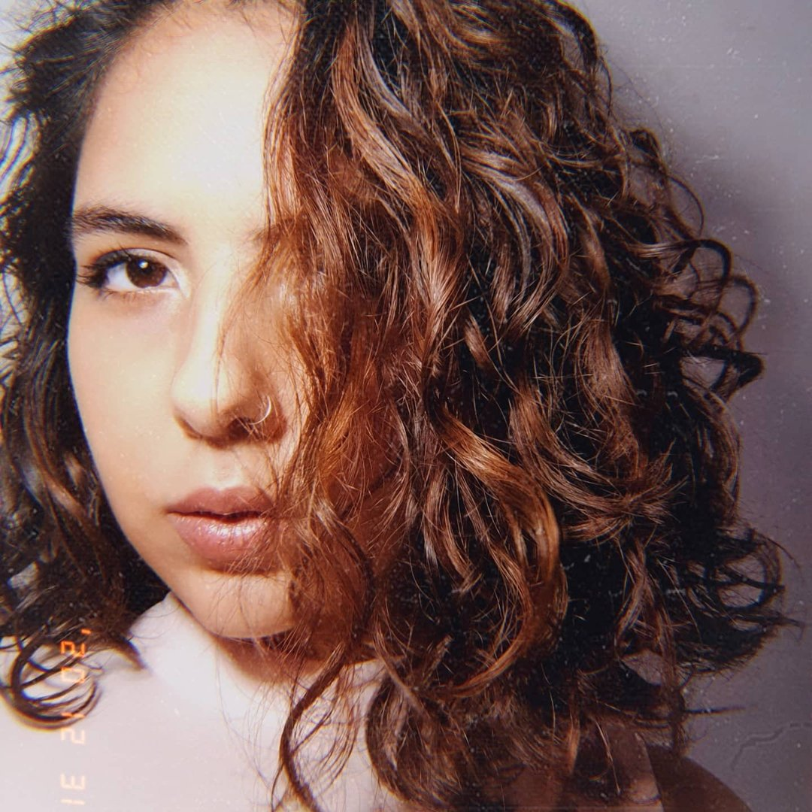

Marcele Montalvão Matos
Brasileira, solteira, 21 anos.
Objetivo
Desenvolvedora FullStack e Cientista de Dados
Experiência profissional
Compass.UOL - 2022
Estagiária em Desenvolvimento Backend
- Desenvolvimento de API'S em Java e SpringBoot
- Integração de API'S com banco de dados MongoDB e MySQL
- Criação de aplicações Monolíticas e de Microsserviços
- Experiencia e prática de Scrum e Kanban
Formação
Graduação em andamento em Análise e Desenvolvimento de Sistemas